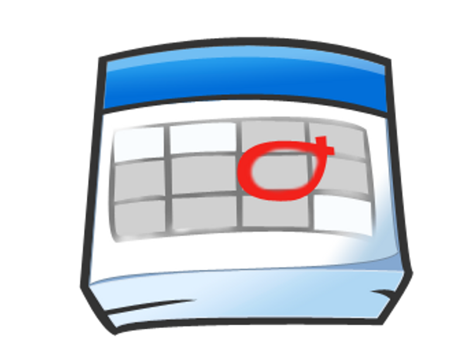
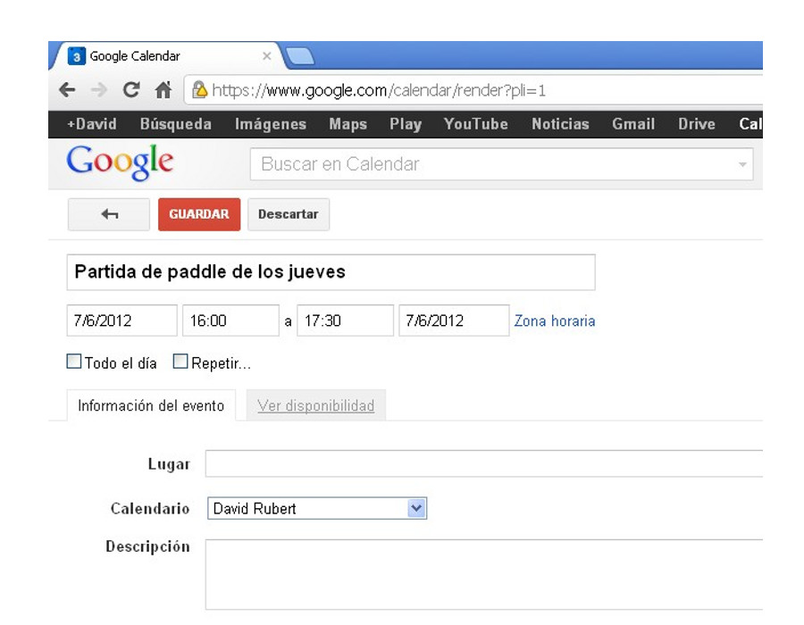

Trabajo colaborativo con Google Calendar
google
calendar
Gestión de calendarios y eventos
Apreta la tecla → para avanzar.

Google Calendar

La funcionalidad básica de Google
Calendar ya la tenemos clara, veamos ahora algunos
detalles importantes que nos facilitarán el uso del calendario.
- Gestión de calendarios.
- Eventos en detalle.
- Recepción de invitaciones a eventos.
Calendarios
Apreta la tecla → para avanzar.
Los calendarios

Podemos separar nuestros eventos en diferentes
calendarios. A parte de tener clasificada la información, nos permiten
dar diferentes niveles de privilegios a cada calendario. Vemos algunos
ejemplos:
- Calendario personal. Donde introducimos
nuestros eventos personales, no compartido, o sólo compartido con la familia.
- Calendario de trabajo. Con todos los eventos
de faena, incluidas vacaciones. Compartido con todos los compañeros
de trabajo sólo en modo ocupado/disponible.


Cambia de foto con las teclas: ↑ y ↓
Crear un nuevo calendario
Podemos añadir calendarios propios fácilmente, de manera que podremos clasificar perfectamente todas nuestras citas de manera agrupada. Ventajas:
- Nos organizamos mejor.
- Definimos el nivel de compartición específico para cada calendario.
- Definimos la alerta por defecto de cada tipo de calendario.

Apreta la tecla → para avanzar.
Práctica
Apreta la tecla → para avanzar.
Práctica de calendarios

- Créate un nuevo calendario llamado "Fiestas".
- Añade algún festivo del 2015 a partir del calendari laboral 2015 de l'UJI, por ejemplo, "Sant Pere" el 29 de Junio al calendario "Fiestas", duración todo el día.
- Entra a la configuración del nuevo calendario y comprueba el tipo de alerta con el que se nos notificarán los eventos de ese calendario.
- Finalmente, borra el calendario. ¡Atención! sólo el calendario "Fiestas" perderá todos sus eventos.
Eventos
Gestión avanzada de eventos
Apreta la tecla → para avanzar.
El evento

Es la unidad mínima de información de un calendario.
Representa un acontecimiento que se producirá un día, a una hora, con
una determinada duración, y con una posible repetición.
Hay mucha información adicional y muchas propiedades
que podemos asociar a un evento, así que empecemos con un ejemplo de
un evento sencillo:
Visita al oftalmólogo, viernes 29 de Mayo a las 12.30h.
Propiedades principales de un evento

- Duración. ¿Cuánto dura el evento?
- Repetición. ¿Se repite siguiendo un patrón?
- Ubicación. ¿Donde se producirá el evento?
- Calendario al que pertenece. ¿En cuál de
nuestros calendarios lo clasificamos?
- Información de privacidad. ¿Queremos hacer el
evento público?
- Compartir evento con invitados. ¿Queremos
enviar invitaciones a este evento a otras personas?
Recordatorios de un evento
Podemos definir alertas asociadas a un evento, de manera que se nos notificará con adelanto de que la fecha del evento está cerca. Estas notificaciones pueden enviarse por:
- Correo electrónico. Un e-mail nos avisará de que la fecha del evento está cerca.
- SMS. Si hemos configurado nuestro móvil, un SMS nos avisará de la proximidad del evento.
Además del tipo de notificación, podremos definir con cuanta antelación queremos que se nos avise (15 minutos antes, 1 hora, 1 día).



Cambia de foto con las teclas: ↑ y ↓
Otras propiedades de un evento
- Adjuntos. Podemos incluir un adjunto asociado a nuestro evento.
- Color. Podemos definir un color personalizado para un evento.
- Privacidad. Definimos el nivel de compartición que queremos asociar al evento (público/privado).
Estas últimas propiedades no suelen modificarse a nivel de evento, sino que se dejan las opciones por defecto definidas en el calendario. Lo veremos la siguiente sesión.
Práctica
Creación/modificación de eventos con repetición
Apreta la tecla → para avanzar.
Ejemplos de eventos avanzados
Veamos algunos ejemplos de eventos más avanzados,
donde se utilicen las funciones más complejas del sistema de
eventos, normalmente relacionadas con la repetición.
- Eventos repetidos.
- Eventos repetidos con alguna modificación en la
repetición.
- Borrado de algún día de los eventos
repetidos.


Cambia de foto con las teclas: ↑ y ↓
Práctica de eventos con repetición

- Crea el siguiente evento con repetición.
Título: Curso de Google Calendar.
Inicio: 6 de Mayo del 2015.
Duración: De 13.30h a 15.00h (1,30 horas)
Fin: 3 de Junio del 2015.
Repetición: Todos los miércoles
Lugar: ESTCE aula de prácticas 203, Universitat Jaume I
Práctica de eventos con repetición
- Intenta borrar el primer evento (lunes) del evento repetido que acabamos de crear. ¿Qué ocurre?.
- Mueve la última clase del lunes al martes. ¿Te lo permite?
- Si las clases se prorrogaran 1 semana más, ¿sabrías modificar el evento para conseguirlo?
Invitación a eventos
Apreta la tecla → para avanzar.
Invitación a eventos
Eventos de cita conjunta (una reunión, una comida, una partida de tenis). Los asistentes deberán confirmar su asistencia, o proponer otras horas/días.
- El evento se crea normalmente.
- Se invita a asistentes, que immediatamente reciben una notificación informando de la convocatoria.
- Los asistentes podrán: confirmar asistencia/no asistencia/quizá asistan.
- Si los tenemos disponibles podremos consultar la disponibilidad horaria de los asistentes antes de convocar la cita.


Cambia de foto con las teclas: ↑ y ↓
Invitación a eventos
Podemos dar permisos de interacción con el evento por parte de los invitados:
- Ver la lista de invitados. Si queremos que los asistentes puedan ver la lista de otros invitados al evento.
- Invitar a otros. Si queremos que los asistentes puedan invitar a otras personas al evento, pero no modificar la fecha o la lista de invitados.
- Editar evento. Si queremos que los asistentes puedan además modificar la fecha del evento, o poner y quitar invitados.
Práctica
Invitación a eventos
Apreta la tecla → para avanzar.
Práctica de eventos con invitación
- Crea el siguiente evento con invitación.
Título: Partida de tenis.
Inicio: 28 de Octubre del 2015.
Duración: De 18.30h a 20.00h (1,30 horas)
Fin: 28 de Octubre del 2015.
Repetición: Sin repetición.
Lugar: Pistas de tenis del Servei d'Esports.
Invitar a: David Rubert (o al compañero/a que tú quieras).
Práctica
Repaso de eventos
Apreta la tecla → para avanzar.
Evento simple
- Crea el siguiente evento.
Título: Cita revisión médica.
Inicio: 30 de Octubre del 2015.
Duración: De 8.30h a 9.00h (30 minutos)
Fin: 30 de Octubre del 2015.
Repetición: Sin repetición.
Lugar: Centro médico.
Evento con repetición
- Crea el siguiente evento con invitación.
Título: Día de la Constitución Española.
Inicio: 6 de Diciembre.
Duración: Todo el día
Repetición: Todos los años.
Evento con repetición
- Crea el siguiente evento con invitación.
Título: Reunión para discutir subida de sueldo.
Inicio: 1 de Junio a las 11.00h.
Duración: 1,30 horas.
Asistentes: Tú y tu compañero/a de al lado, o ponedme a mi: vrubert@uji.es.
- Para terminar, borra todos los eventos que hemos creado.